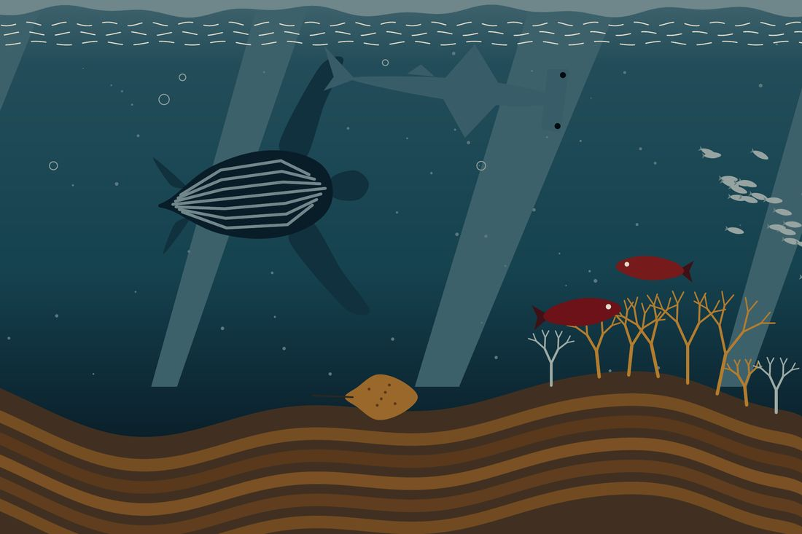
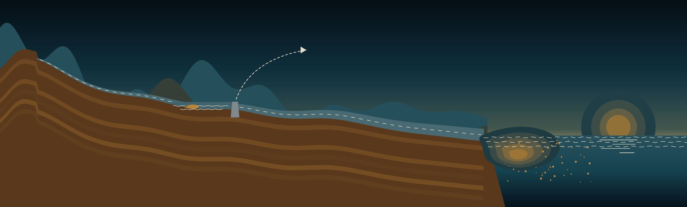
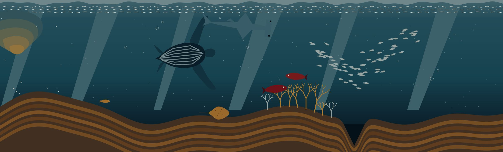

29,100 km²
Catchment area
373 million m³
Woodstock Dam Capacity
21 of 28
Ecosystem types threatened
The hidden world
The river builds the sea floor
The uThukela rises at Mont-aux-Sources in the Drakensberg and runs about 560 km to the Indian Ocean in KwaZulu-Natal. Most of it falls in the lower 480 km, which is why it carries so much sediment.
At the mouth, that sediment and detritus builds the Thukela Banks in the KwaZulu-Natal Bight. The turbid, nutrient-rich water feeds mud and soft-sediment habitats...
Leatherback turtle: Critically Endangered
Hammerhead sharks: Endangered
Dageraad: Endangered

Beneath the surface of the KwaZulu-Natal Bight. Illustration from the Source to Sea gatefold.
The numbers
Most of this seascape is under pressure
21 of 28
ecosystem types are
threatened
Trawling, line fishing, mining and petroleum applications and a recently laid submarine cable all sit on the banks. About half of the area is in poor ecological condition.
- 560 km from Mont-aux-Sources to the Indian Ocean
- 29,100 km² catchment, at about 200 m³/s average discharge
- 373 million m³ held by Woodstock Dam, commissioned 1982

The river profile from source to sea. Illustration from the front flat of the Source to Sea gatefold.

Below the surface. Illustration from the back flat of the Source to Sea gatefold.